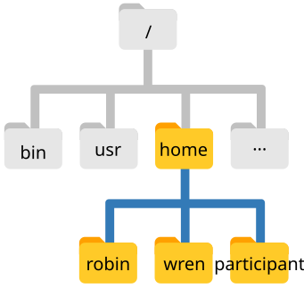

2 Navigating the filesystem
- Understand the hierarchical structure of filesystems and how the location of files and directories is specified.
- Distinguish between absolute and relative paths.
- Recognise when
/is used to specify the root directory or to separate directories. - Navigate the filesystem using the commands
pwd,lsandcd. - Make use of the
*wildcard to match files by patterns. - Use the
findcommand to effectively search for files or directories.
2.1 The Unix filesystem
The part of the operating system responsible for managing files and directories is called the filesystem. It organizes our data into files and directories (also called folders), which hold files or other directories. These directories are organised in a hierarchical way, which we can represent as a tree. Take the following image as an example:

This is illustrating the location of the home directories for three users called “robin”, “wren” and “participant” (representing us). We can see that each of their home directories is within another directory called home. And finally, the home directory is located in the so-called root of the filesystem, represented by a / slash. The root is the top-most directory where everything for our operating system is stored in (it’s not possible to go “above” this special root directory).
When we use the shell, we need to specify the location of files and directories using an “address” (similarly to how you specify an internet address to reach a given website). Let’s explore this from our shell terminal.
First let’s find out where we are by running a command called pwd (which stands for “print working directory”). Directories are like places - at any time while we are using the shell we are in exactly one place, called our current working directory. Commands mostly read and write files in the current working directory, so knowing where you are before running a command is important.
pwd/home/participantHere, the computer’s response is /home/participant, which is our home directory, the default when opening a new shell terminal. The name “participant” is our username.
If the user “wren” was logged in, they would see /home/wren as their default working directory.
Notice how the location of this folder is specified:
/at the start specifies the root of the filesystem.homespecifies the folder “home” within the root./is a separator between the “home” folder and the next folder.ubuntuis the final folder specifying this location.
This way of representing file or directory locations is called a path.
/ slash
Notice that there are two meanings for the / character. When it appears at the beginning of a file or directory name, it refers to the root directory. When it appears inside a name, it’s a separator.
The home directory path will look different on different operating systems. For a user named “wren”, on a Mac it would look like /Users/wren, and on Windows C:\Users\wren.
2.2 Listing Files
We can see the content of our current directory by running ls, which stands for “listing”:
lsDocuments Downloads Music Public
Desktop Movies Pictures TemplatesThe /home/participant/ directory contains many familiar folders that are typical of a user’s home.
The data for this workshop is located in our Desktop, within a directory called data-shell. We can look at its contents passing a directory name as an argument to ls:
ls /home/participant/Desktop/data-shellREADME.txt coronavirus molecules sequencing things.txt2.3 Changing Directory
So far, we have been working from /home/participant/. However, we can change our location to the Desktop/data-shell directory to do our work.
The command to change locations is cd (“change directory”) followed by a directory name to change our working directory.
cd /home/participant/Desktop/data-shell/We can check with pwd that we are in the correct directory. We can also run ls again to see the files within our current directory.
What if we now wanted to go to the molecules directory? We could do:
cd /home/participant/Desktop/data-shell/molecules/However, that’s a lot of typing! Instead, we can move to that directory by specifying its location relative to our current directory. So, if our current directory was /home/participant/Desktop/data-shell/ we could just do:
cd moleculesIn conclusion, there are two ways to specify directory names:
- An absolute path includes the entire path (or location) from the root directory, which is indicated by a leading slash. The leading
/tells the computer to follow the path from the root of the filesystem, so it always refers to exactly one directory, no matter where we are when we run the command. - A relative path tries to find that location from where we are (our current directory), rather than from the root of the filesystem.
~ home shortcut
The shell interprets the character ~ (tilde) at the start of a path to mean “the user’s home directory”. In our example the ~ is equivalent to /home/participant.
2.3.1 Going “up” a directory
We now know how to go down the directory tree, but how do we go up? We might try the following:
cd data-shell-bash: cd: data-shell: No such file or directoryBut we get an error! Why is this? With our methods so far, cd can only see sub-directories inside your current directory. To move up one directory we need to use the special shortcut .. like this:
cd .... is a special directory name meaning “the directory containing this one”, or more succinctly, the parent of the current directory. Sure enough, if we run pwd after running cd .., we’re back in /home/participant/Desktop/data-shell.
Sometimes file and directory names get too long and it’s tedious to have to type the full name, for example when moving with cd.
We can let the shell do most of the work through what is called tab completion. Let’s say we are in the /home/participant/Desktop/data-shell and we type:
ls moland then press the Tab ↹ key on the keyboard, the shell automatically completes the directory name:
ls molecules/If we press Tab ↹ again it does nothing, since there are now multiple possibilities. In this case, quickly pressing Tab ↹ twice brings up a list of all the files.
Alternatively, some people prefer that repeatedly pressing Tab ↹ cycles through the different file options. To set this up, see this StackExchange post: Terminal autocomplete: cycle through suggestions
2.4 Wildcards
Wildcards are special characters that can be used to access multiple files at once. The most commonly-used wildcard is *, which is used to match zero or more characters.
Consider these examples referring to files in the molecules directory:
*.pdbmatches every file that ends with ‘.pdb’ extension.p*.pdbonly matchespentane.pdbandpropane.pdb, because the ‘p’ at the front only matches filenames that begin with the letter ‘p’.
Another common wildcard is ?, which matches any character exactly once. For example:
?ethane.pdbwould only matchmethane.pdb(whereas*ethane.pdbmatches bothethane.pdb, andmethane.pdb).???ane.pdbmatches three characters followed byane.pdb, givingcubane.pdb ethane.pdb octane.pdb.
When the shell sees a wildcard, it expands the wildcard to create a list of matching filenames before running the command that was asked for. As an exception, if a wildcard expression does not match any file, Bash will pass the expression as an argument to the command as it is.
For example typing ls *.pdf in the molecules directory (which does not contain any PDF files) results in an error message that there is no file called *.pdf.
The * wildcard is by far the most commonly used. However, there are other wildcards available, and you can find more information about them on the GNU Wildcard documentation page.
2.5 Finding Files
Often, it’s useful to be able to find files that have a particular pattern in their name. We can use the find command to achieve this. Here is an example, where we try to find all the CSV files that exist under our data-shell folder:
find . -type f -name "*.csv"./coronavirus/variants/india_variants.csv
./coronavirus/variants/ireland_variants.csv
./coronavirus/variants/southafrica_variants.csv
./coronavirus/variants/switzerland_variants.csv
./coronavirus/variants/uk_variants.csv
./sequencing/sample_metadata.csvIn this case, we used the option -type f to only find files with the given name. We could use the option -type d if we wanted to instead find directories only. If we wanted to find both files and directories, then we can omit this option.
We used -name to specify the name of the file we wanted to search for. Similarly to ls, you can use the * wildcard to match any number of characters. In our example, we used *.csv to find all files with the .csv file extension.
Finally, we searched for files from the current location we were in. That’s what the . in the command above means: search for files from the current directory. If we wanted to find files in a different directory without having to cd into it first, we could replace . with the name of the directory we want to search from. For example, if you only wanted to search for CSV files in the coronavirus folder:
find coronavirus -type f -name "*.csv"coronavirus/variants/india_variants.csv
coronavirus/variants/ireland_variants.csv
coronavirus/variants/southafrica_variants.csv
coronavirus/variants/switzerland_variants.csv
coronavirus/variants/uk_variants.csvNotice how the sequencing/sample_metadata.csv file is not returned in this case.
The find command has many more options to configure the search results (you can check these with man find). One option that can sometimes be useful is to find AND delete all the files. For example the following command would delete all files with .txt extension:
find . -type f -name "*.txt" -deleteAs you can imagine, this feature is very useful but also potentially dangerous as you may accidentally delete files you didn’t intend to (“with great power comes great responsibility”, as they say ). So, always make sure to run the command without the -delete option first to check that only the files you really want to delete are being matched.
You may have noticed that all of the files in our data directory are named “something dot something”. For example README.txt, which indicates this is a plain text file.
The second part of such a name is called the filename extension, and indicates what type of data the file holds. Here are some common examples:
.txtis a plain text file..csvis a text file with tabular data where each column is separated by a comma..tsvis like a CSV but values are separated by a tab..logis a text file containing messages produced by a software while it runs..pdfindicates a PDF document..pngis a PNG image.
This is just a convention: we can call a file mydocument or almost anything else we want. However, most people use two-part names most of the time to help them (and their programs) tell different kinds of files apart.
This is just a convention, albeit an important one. Files contain bytes: it’s up to us and our programs to interpret those bytes according to the rules for plain text files, PDF documents, configuration files, images, and so on.
Naming a PNG image of a whale as whale.mp3 doesn’t somehow magically turn it into a recording of whalesong, though it might cause the operating system to try to open it with a music player when someone double-clicks it.
2.6 Exercises
{kind=link}
2.7 Summary
- The filesystem is organised in a hierarchical way.
- Every user has a home directory, which on Linux is
/home/username/. - Locations in the filesystem are represented by a path:
- The
/used at the start of a path means the “root” directory (the start of the filesystem). /used in the middle of the path separates different directories.
- The
- Some of the commands used to navigate the filesystem are:
pwdto print the working directory (or the current directory)lsto list files and directoriescdto change directory
- Directories can be created with the
mkdircommand. - Files can be moved and/or renamed using the
mvcommand. - Files can be copied with the
cpcommand. To copy an entire directory (and its contents) we need to usecp -r(the-roption will copy files recursively). - Files can be removed with the
rmcommand. To remove an entire directory (and its contents) we need to userm -r(the-roption will remove files recursively).- Deleting files from the command line is permanent.
- We can operate on multiple files using the
*wildcard, which matches “zero or more characters”. For examplels *.txtwould list all files that have a.txtfile extension. - The
findcommand can be used to find the location of files matching a specific name pattern.